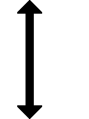

(1)
Bedeutung
Wegfahren.
Signalbuch-Online • Ra-Signale
Wegfahren.
Mit der Mundpfeife oder dem Horn:
Ein langer Ton.
Tageszeichen:
Senkrechte Bewegung des Armes von oben nach unten.
Nachtzeichen:
Eine senkrechte Bewegung der Laterne von oben nach unten.
